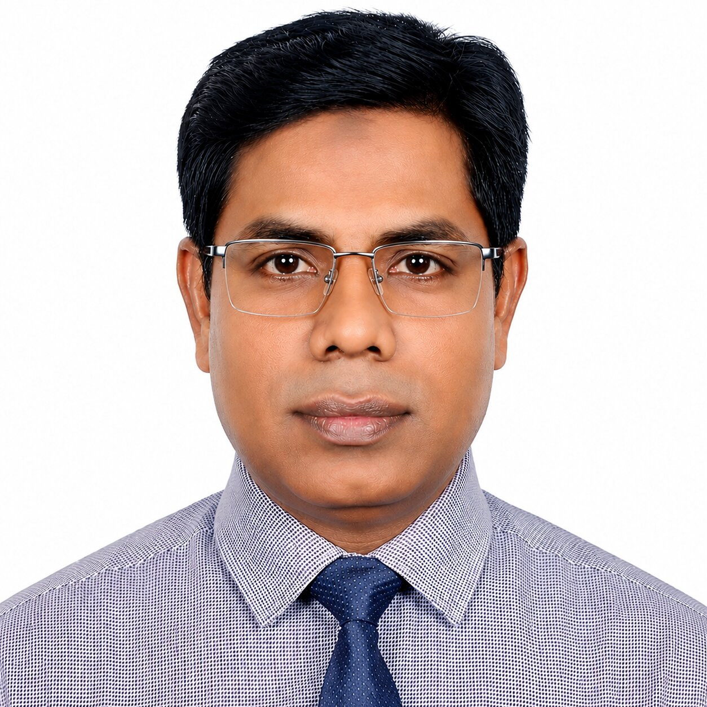

16+ years of hands-on leadership experience in factory and technical Quality Management. Progressed from Pattern Master to QA Manager, demonstrating continuous career advancement. Extensive experience across factories, liaison offices and buying houses. Strong expertise in garment construction, quality systems, pattern engineering and technical problem-solving. Built and led high-performing factory QA/QC teams across multiple organizations. .
Accomplished Quality Assurance and Technical Management professional with 16+ years of progressive, hands-on experience across garment factories, liaison offices and buying houses in the Ready-Made Garment (RMG) industry. Proven expertise in factory-floor quality control, technical audits, pattern engineering, in-line/pre-final/final inspection, and production quality across Knit, Woven (Denim & Non denim) products. Skilled at leading QA/QC teams directly on the production floor, coordinating with cutting, sewing and finishing sections, driving root-cause analysis and CAPA closure, and ensuring full compliance with international buyer specifications from sample stage through final shipment. Strong record of improving factory quality performance while maintaining production efficiency.
• Leadership & Decision Making • Analytical & Problem-Solving • Factory & Buyer Relationship Management • Cross-Functional Team Leadership • Communication & Negotiation • Adaptable to Dynamic Environments
• MS Office (Excel, Word, PowerPoint) • Gerber AccuMark / AutoCAD • Technical Documentation • Quality Reporting & Production Analysis
BSS — Government Bangla College, 1997 HSC — Madrasah Board, Arts, 1995 SSC — Madrasah Board, Arts, 1993
Bangla — R / W / S ████████████████████ English — R / W / S ███████████████████░ Korean — R / W ██████████████████░░ Korean — Speaking ███████████░░░░░░░░░
Father's Name: Md. Mokbul Hossain Permanent Address: Vill- Mohipara, Post- Jagdal, PS: Panchagarh Sadar, District: Panchagarh Date of Birth: 01 February 1977 Nationality: Bangladeshi Marital Status: Married
Phone / WhatsApp: +880 1836391175
Email: mkislamliton@gmail.com